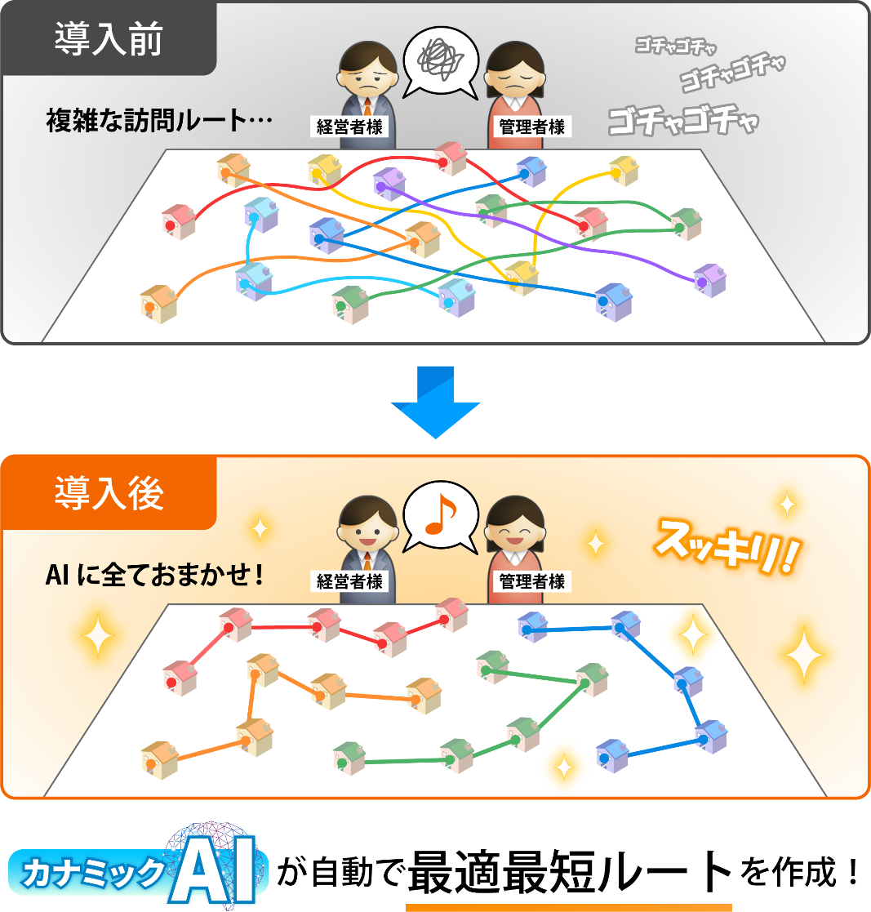
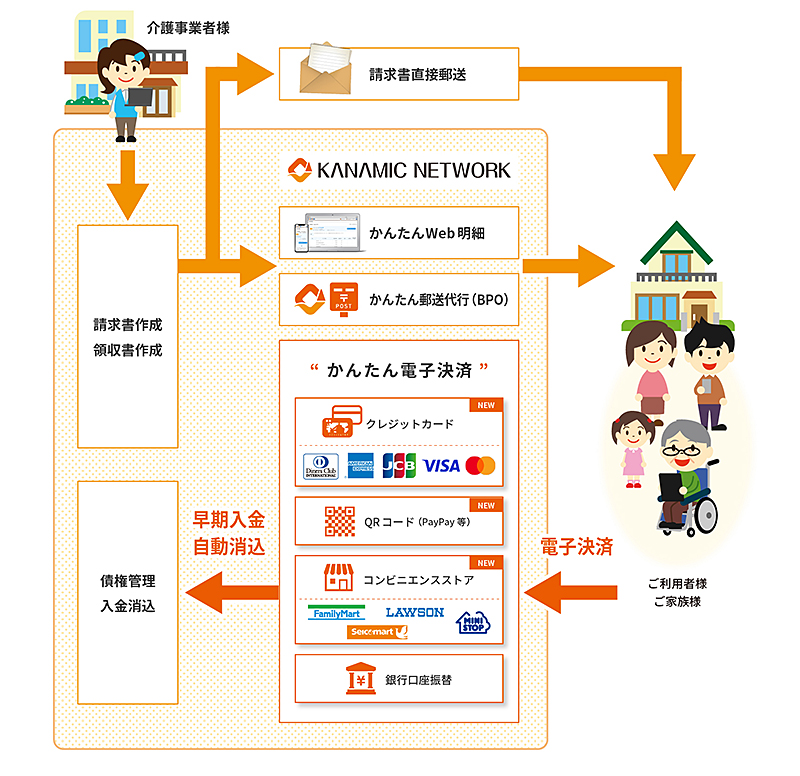
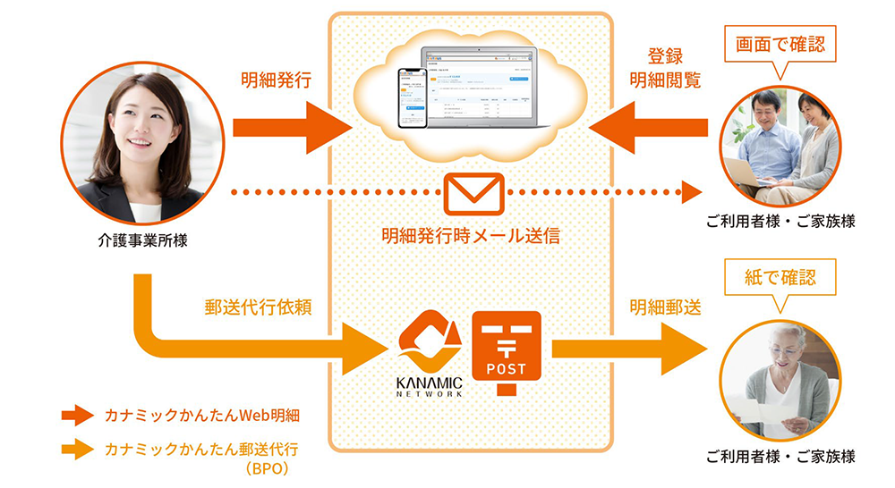

E(Environment)
社会(Social) 2024年11月更新
■S(Social)：SASBスタンダード基づく情報開示
| KPI | SASBコード | 2021年度 実績 |
2022年度 実績 |
2023年度 実績 |
2024年度 実績 |
2027年 目標 |
|---|---|---|---|---|---|---|
| 情報漏洩・滅失又はき損の件数 | TC-SI-230a.1 | 0件 | 0件 | 0件 | 0件 | 0件 |
| ユーザーのプライバシーに関連する訴訟関連手続きの結果として発生した金銭的損失 | TC-SI-220a.3 | 0円 | 0円 | 0円 | 0円 | 0円 |
| サービス中断の発生件数 | TC-SI-550a.1 | 5回 (2020年) |
4回 | 3回 | 0回 | 2回 |
| 中断の合計日数 | TC-SI-550a.1 | 1.09日 (2020年) |
0.09日 | 0.13日 | 0.00日 | 0.54日 |
| 海外にいる従業員の比率 | TC-SI-330a.1 | 15% | 14% | 14% | 5% | 25% |
| マネージャーの外国人比率 | TC-SI-330a.3 | 11% | 11% | 11% | 10% | 13% |
| マネージャーの女性比率 | TC-SI-330a.3 | 7% | 7% | 6% | 7% | 15% |
| 技術職の女性比率 | TC-SI-330a.3 | 33% | 33% | 33% | 34% | 40% |
| 従業員（役員を除く）女性比率 | TC-SI-330a.3 | 23% | 27% | 27% | 29% | 40% |
| 独禁法関連訴訟手続きの結果として発生した金銭的損失 | TC-SI-520a.1 | 0円 | 0円 | 0円 | 0円 | 0円 |
ESG重要課題(S)
超高齢社会の課題への取り組み
■超高齢社会をサステナビリティな社会へ
超高齢社会をDX（デジタルトランスフォーメーション）することで様々な社会課題を解決し、サステナビリティな社会を創造していきます。
※リンクをクリックすると当該プレスリリースに遷移します。
「地域包括ケアシステム」の実現に寄与するため
多職種間連携できる地域連携クラウドサービスを展開
- クラウドサービスのユーザー数：約29.3万人
- クラウドサービスの導入地域数：1,384地域
- 当社参画のモデル事業等の一覧：「柏モデル」、「旭川モデル」、「東京都多職種ポータルサイト」
介護業界におけるDX
（デジタルトランスフォーメーション）の推進
- カナミックかんたんAI訪問ルート
- カナミックかんたん電子決済
- 介護請求書のWeb明細化、郵送代行（BPO）
- カナミック独自AIの開発、普及
- IoT、ICT連携の開発、普及
健康寿命延伸を目指したPHR・EHR活用の
仕組みづくりを推進
- 株式会社アーバンフィットの完全子会社化
- 科学的介護情報システム（LIFE）への対応
- 自治体向け地域データヘルスシステムの標準化を目指したシステム開発
健康づくりの推進
- 「健康経営優良法人2024」に認定
- カナミック戦隊 「メタボ＆フレイルバスターズ」始動
- スポーツジム「アーバンフィット」利用補助
- 新型コロナウイルス感染症患者対応医療機関検索システム（東京都多職種ポータルサイト）の開発・運営
- 新型コロナウイルス感染症対策製品の販売
介護業界のDXを推進！最適な訪問ルートをAI自動生成
「カナミックかんたんAI訪問ルート」のリリース開始

訪問介護事業所・訪問看護事業所の現場では、限られたスタッフやヘルパーの人数で働き方改革を実現しつつ、生産性向上も実現する為に最適なルート表やシフト表の作成が必要です。 しかし現状では、訪問ルートの作成は作成するスタッフの経験に頼る部分が大きく、スケジュール作成に多くの時間を費やしています。 さらに日々の現場業務ではスタッフの希望勤務状況を考慮しつつ訪問予定を組み、サービスを提供しておりますが、考慮すべき点が多くまた頻繁にスケジュール変更が発生する為、人手による調整が必要となり、多くの業務時間が費やされております。
この度、当社が提供する「カナミックかんたんAI訪問ルート」をご利用頂くことで、事業所の稼働率を最大化し、訪問ルート作成業務の時間削減が可能となります。これにより、事業所の売上の最大化、スタッフの最適配置による業務の効率化を実現します。本機能を通じて、訪問介護事業所および訪問看護事業所の経営効率の向上、スタッフの働く環境の改善、利用者へのサービスの質の向上に寄与します。
介護業界向け「カナミックかんたん電子決済サービス」提供開始！
介護業界のキャッシュレス化に貢献します

「カナミックかんたん電子決済サービス」では、カナミッククラウドサービスで作成した介護サービス利用者様向けの請求書およびカナミックWeb明細の決済手段として、従来の「銀行口座振替」に加えて、Fintechのサービスである「クレジットカード決済、QRコード決済（PayPay）、コンビニ決済」の提供を開始いたします。
介護現場における介護保険自己負担料金の回収業務においては、銀行口座振替の引落不能対応における煩雑な現金の取り扱いや振込対応も毎月多く発生しており、現金の管理や事務の手間等の膨大な事務作業が発生しております。クレジットカード等のキャッシュレス決済サービスの提供により、介護現場における事務業務負荷の軽減や早期入金化、カナミッククラウドサービス上の債権管理機能による自動消込によるヒューマンエラーの回避等、負荷の軽減を図ることができます。
面倒な請求書・領収書発行業務をDXにより効率化！

クラウドで作成した介護サービス利用者向けの請求書と領収書の「発行」「連絡」をWeb上で完結できる「カナミックかんたんWeb明細」と、郵送で請求書・領収書をお渡しする場合の「印刷」「封入封緘」「郵送」の事務代行を当社が行う「カナミックかんたん郵送代行（BPO）」。
請求書・領収書発行の作業にかかる人件費や、事務作業時間の大幅な削減、ペーパーレス化、介護現場での業務負荷を軽減します。
データセキュリティ
医療・介護業界において、個人情報漏えい・滅失が発生すると、損害賠償が請求されるだけでなく顧客や要介護者等にも甚大な損害を与えるリスクがあります。当社では個人情報への不正アクセス、個人情報の漏えい・滅失又はき損の防止、並びに是正に関して内部規程を定め、下記の通り個人情報を保護しています。
今後、各種内部統制の適切性・有効性を対象とした、外部機関の評価であるSOC報告書の取得を目指しております。


プライバシーマーク
プライバシーマークを取得し、個人情報の保護に努めています。


情報セキュリティ対策
システム通信の暗号化はもちろん、個人情報が含まれた機器の持ち出しも厳密に管理するなど様々な人的事故防止にも取り組んでいます。医療情報システムの安全管理に関するガイドラインにも準拠しております。


BCP対策
国内複数箇所の強固なセキュリティのデータセンターで厳重に管理をしています。万が一の災害時でも、データはバックアップセンターでも同期されて管理・保管されていますので、データ消失のリスクを最小限に抑えられます。
| 2021年度実績 | 2024年度実績 | |
|---|---|---|
| 情報漏えい・滅失又はき損の件数 | 0件 | 0件 |
| 上記のうち個人を特定できる情報（PII）を含む割合 | - | - |
| 影響を受けたユーザー数 | - | - |
データプライバシー
医療・介護サービス利用者等のプライバシーを尊重し、医療・介護情報やその他の個人情報のプライバシーを確保したシステム運営を行っています。顧客や従業員を含む全ての個人に関する情報の取扱いについて規定を定め、特定された利用目的の達成に必要な範囲を超えた個人情報の取扱（目的外利用）を行わないこと及び措置を講じています。
プライバシーマーク
プライバシーマークを取得し、個人情報の保護に努めています。


個人情報の二次的利用
個人情報の利用目的を規定し、規定された範囲外で利用する場合は事前にお客様にお知らせしご了解をいただいた場合に限り利用する方針


苦情対応
個人情報の取扱いに関する苦情及び相談対応への内部規程を定め、苦情及び相談に適切かつ迅速に対応する方針
| 2021年度実績 | 2024年度実績 | |
|---|---|---|
| ユーザーのプライバシーに関連する訴訟関連手続きなど、法的手続きの結果として発生した金銭的損失の合計金額 | 0円 | 0円 |
| ユーザー情報に関する法執行機関（警察等）からの要求件数 | 0件 | 0件 |
| 情報が要求されたユーザー数 | 0件 | 0件 |
| 開示に至った割合 | - | - |
| 当社サービスが、政府や行政機関による監視の対象となる国の一覧 | 日本のみ | 日本のみ |
システム中断等のリスクに対処するための管理アプローチ
医療・介護業務で使うシステムの不具合は顧客業務に重大な影響を引き起こすリスクをはらんでいます。
当社においては、予期しないサービス中断等のリスクに対処するためのBCP対策などを講じております。
現在のシステム稼働率に対して、2030年までにサービス中断を半減する目標を立てております。
今後、各種内部統制の適切性・有効性を対象とした、外部機関の評価であるSOC報告書の取得を目指しております。
| 2024年度実績 | 2027年目標 | |
|---|---|---|
| サービス中断の合計日数 | 0日 | 0.54日 |
| サービス中断の発生回数 | 0回 | 2.0回 |
| 稼働率 | 100% | 99.85% |
グローバルかつ多様性に満ちた人材の確保と定着
多様な人種と性別、多様な才能と感性が、互いに尊重し合いながら同じベクトルで相乗効果を生み出す。こうした多様性が集うカナミックネットワークによってヘルスケア業界にイノベーションを巻き起こしていきます。
カナミックネットワークは、従業員に常に等しく活躍の場を提供してまいります。
マネージャーの女性比率
（役員及び管理職）
2024年度実績
2027年目標
技術職の女性比率
（エンジニア等）
2024年度実績
2027年目標
すべての従業員の女性比率
（役員を除く）
2024年度実績
2027年目標
マネージャーの外国人比率
（役員および管理職）
2024年度実績
2027年目標
海外従業員の比率
2024年度実績
2027年目標
国内従業員の比率
2024年度実績
2027年目標